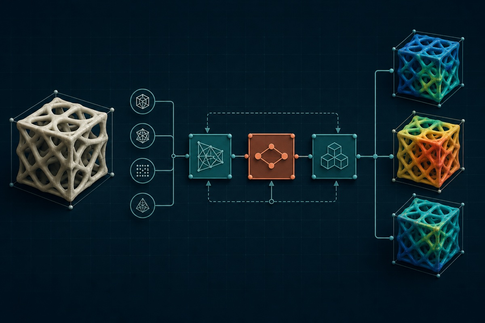
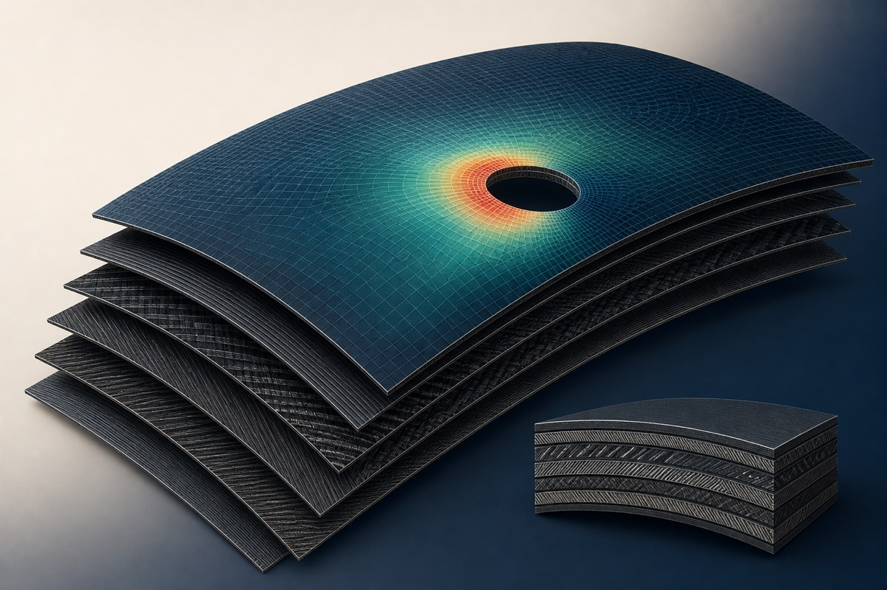
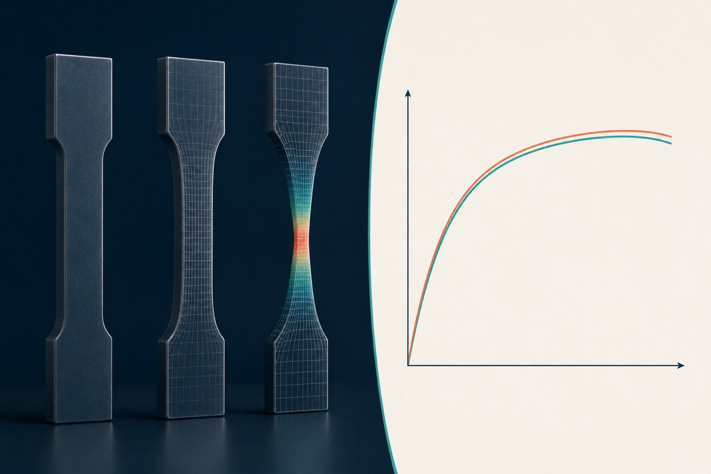

Simulation & mechanics
Nonlinear finite element analysis spanning explicit dynamics, fatigue, buckling, modal response, and disciplined interpretation of model results.
Solutions Consultant, Applications Vancouver, Canada
I work across advanced Abaqus and SIMULIA consulting, application engineering, and customer enablement—combining nonlinear FEA, complex materials, automation, and technical communication.
01 / Expertise
The technical breadth from my résumé, organized here around how it creates value: analyze difficult physics, build repeatable workflows, and help customers act on the result.
Nonlinear finite element analysis spanning explicit dynamics, fatigue, buckling, modal response, and disciplined interpretation of model results.
Material calibration and complex constitutive behavior across plasticity, hyperelasticity, viscoelasticity, composites, damage, failure, and fracture.
Python and Isight workflows for advanced FEA, design of experiments, optimization, parameter studies, and repeatable technical exploration.
Customer-facing engineering spanning discovery, consulting, support, troubleshooting, demonstrations, onboarding, training, and technical content.
02 / Selected impact
These public-safe capability stories add context without exposing customer identities, proprietary geometry, or confidential results.



I connect technical discovery, modeling strategy, troubleshooting, demonstrations, proposals, pilot projects, onboarding, and training so that strong analysis can become adopted engineering practice.
Several customer visits per month · Cross-border technical engagements · 3–4 webinars or seminars annually
03 / Approach
The value of simulation is not the contour plot. It is the quality of the decision that follows.
Clarify the engineering question, decision, evidence, and constraints.
Select the right level of model fidelity and a defensible analysis plan.
Build, automate, and interrogate the model with disciplined checks.
Separate meaningful signals from numerical noise and model limitations.
Translate findings, uncertainty, and tradeoffs for the people deciding.
Support adoption through workflows, training, and implementation.
I am a Vancouver-based engineering professional working at the intersection of advanced simulation, application engineering, consulting, and customer enablement.
My career has moved from composite fracture research, to hands-on product development, to customer-facing simulation consulting. That arc helps me work across the full problem: understand the physics, respect design constraints, communicate with stakeholders, and make the solution usable.
TriMech (Javelin Technologies Inc.) · Simulation and FEA application engineering across consulting, automation, support, technical discovery, demonstrations, and customer enablement.
Tellext · Mechanical product development for a 500 kg, four-wheel-drive and four-wheel-steering security robot, including structural, packaging, and subsystem integration constraints.
University of British Columbia · Composite fibril fracture modeling, solid mechanics, numerical simulation, research, and mechanical engineering instruction.
Education
University of British Columbia · Vancouver, British Columbia
Amirkabir University
05 / Connect
For conversations about simulation strategy, advanced FEA, application engineering, or technical collaboration, LinkedIn is the best place to reach me.
Connect on LinkedIn